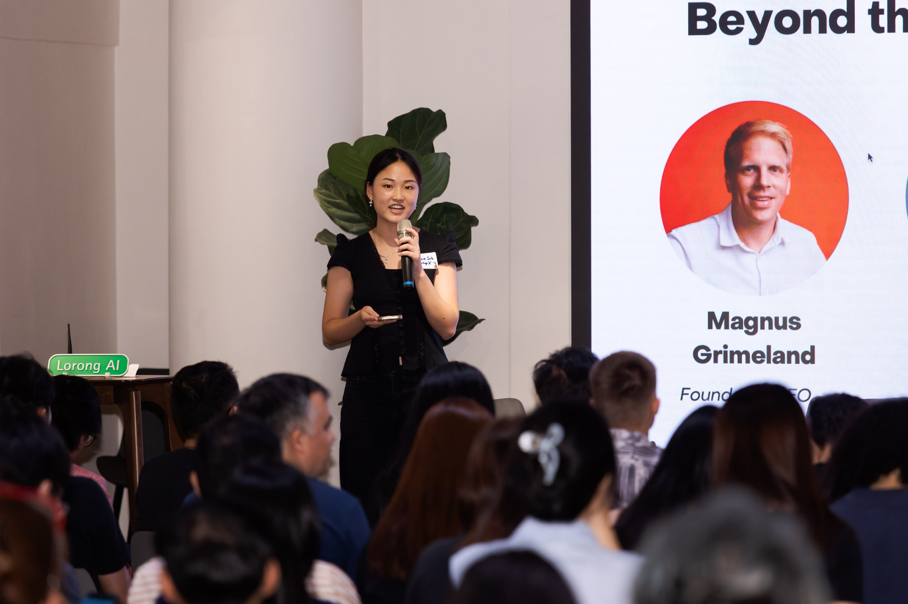
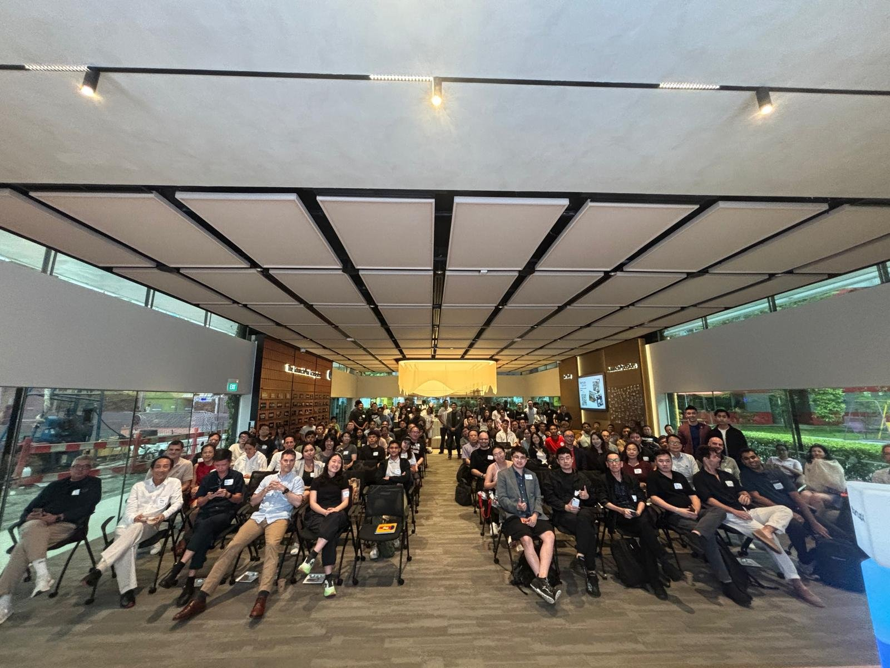
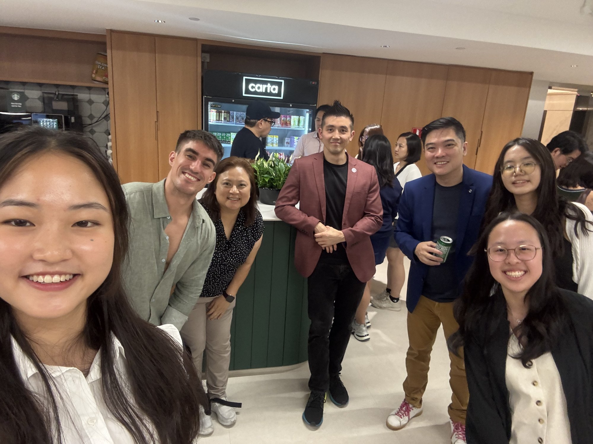

01 · Scouting
Startup Sourcing
Researched startups and stakeholders, then sourced and contacted 1,000+ AI startups for programmes including the World AI Conference Pitching Competition and the Korea Tourism Organisation Accelerator.
Four months inside the startup ecosystem, finding AI startups for accelerator and pitch programmes, hosting community events, and cleaning up the data that kept it all running.

Researched startups and stakeholders, then sourced and contacted 1,000+ AI startups for programmes including the World AI Conference Pitching Competition and the Korea Tourism Organisation Accelerator.
Hosted and emceed four AI community events with 500+ participants and 20+ speakers from startups and VCs such as Hustle Fund and Antler.
Led data management by cleaning 40,000+ historical CRM contacts in Attio, then built Zapier workflows so contact management stayed tidy.
Supported business development with social media posts, email campaigns and sponsorship pitches.
Meeting that many founders and investors changed the questions I ask about technology.

